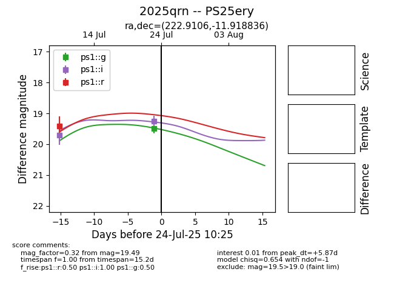

Target 2025qrn at 2025-07-24 10:25, see:
TNS: wis-tns.org/object/2025qrn
YSE: ziggy.ucolick.org/yse/transient_detail/2025qrn
alt names
2025qrn (yse,tns)
PS25ery (panstarrs)
coordinates:
equatorial (ra, dec) = (222.9106,-11.91884)
galactic (l, b) = (343.6152,+41.26745)
photometry
last ps1::g=19.49, ps1::i=19.25, ps1::r=19.40
1 ps1::g, 2 ps1::i, 1 ps1::r detections
